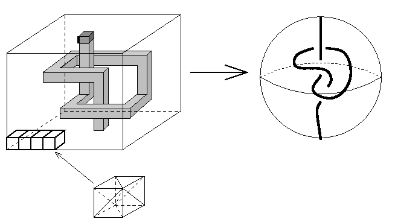

A famous example of non-shellable triangulation of a 3-ball.
This is a triangulation which has a knotted spanning arc
consisting of one edge in its 1-skeleton.
The construction is described in Furch's 1924 article.
A "knotted spanning arc" is an arc such as described in the
right figure below.
The left figure indicates how to embed such a knotted arc by one edge.
First we prepare a big pile of small cubes and dig a hole from
the bottom face, making a knot as in the figure.
If we stop digging one step before the tunnel go through the upper face,
we have the bold edge to be what we want.
(And just triangulate each cube into six tetrahedra withoug introducing
new vertices.)

The data given here is basically according to what described above.
(Removed some tetrahedra which are not needed.)
It uses 380 vertices and 1172 facets.